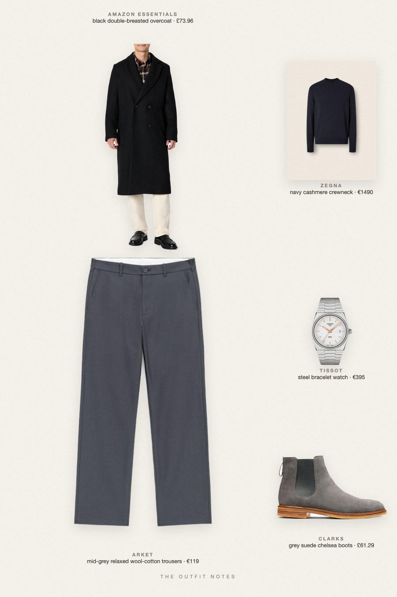
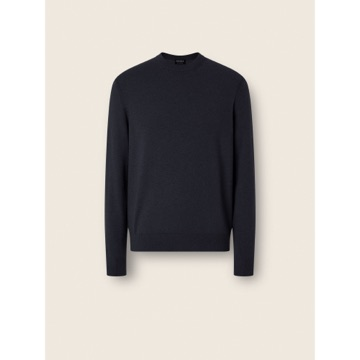
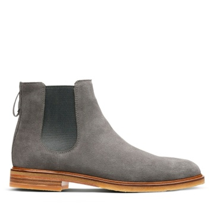

Glass Lobby
navy cashmere, black overcoat

Succession style for men in winter: a black double-breasted wool-blend overcoat over a navy cashmere crewneck (Zegna Oasi), mid-grey relaxed wool trousers and grey suede chelsea boots. A steel Tissot PRX closes the stealth wealth outfit. Quiet luxury men's winter style, unbranded and board-room ready.
The pieces
This page contains affiliate links: if you buy through them, we may earn a commission at no extra cost to you. Disclosure.
 Amazon Essentials
Amazon Essentials
Black double-breasted overcoat
Shop
Zegna
Navy cashmere crewneck
Shop ARKET
ARKET
Mid-grey relaxed wool-cotton trousers
Shop
Clarks
Grey suede chelsea boots
Shop Tissot
Tissot
Steel bracelet watch
Shop
Prices are indicative, taken when the look was published, and may have changed. Pictures of the outfit are AI-generated illustrations of real products; the product photos are the retailers' own.
Published 2 October 2026.